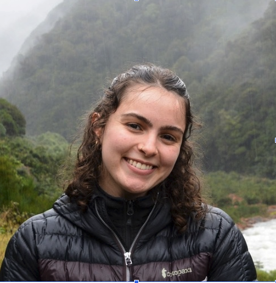

Hi, I'm Annabel 👋
Annabel Wade is a PhD student at Boston University’s Faculty of Computing and Data Sciences, working with Professor Elizabeth Barnes. She works on interpretable deep learning for weather and climate by examining training dynamics and revealing how emulators learn physics. Previously, she worked on deep ensembles for wildfire smoke detection at the National Oceanic and Atmospheric Administration, as well as statistical methods to analyze ocean circulation at the University of Washington.I am a PhD student at Boston University's Faculty of Computing and Data Sciences, working with Professor Elizabeth Barnes. I work on interpretable deep learning for weather and climate by examining training dynamics and revealing how emulators learn physics.
Previously, I worked on deep ensembles for wildfire smoke detection at the National Oceanic and Atmospheric Administration, as well as statistical methods to analyze ocean circulation at the University of Washington. During my undergraduate studies at the University of Washington, I studied applied mathematics, data science, and physical oceanography.
In my free time, you can find me exploring the Boston area via bike 🚲, hanging out with my 2 cats 🐈🐈⬛, and cooking up new recipes 🥘.
Reach me at wade@bu.edu!